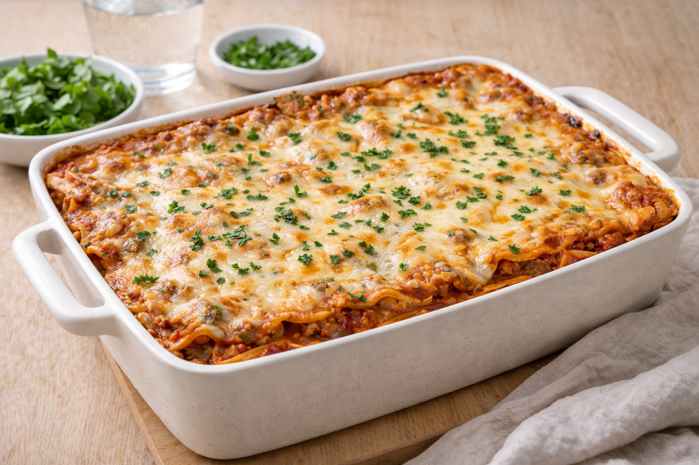

Lasagne
Klassisk lasagne med köttfärssås och béchamel. Perfekt till matlåda och går att frysa.

Ingredienser
- 500 g nötfärs
- 1 gul lök, hackad
- 2 vitlöksklyftor, hackade
- 2 msk tomatpuré
- 1 burk krossade tomater (400 g)
- 1 dl vatten
- Lasagneplattor
- Salt, peppar, oregano
- Béchamel: 50 g smör, 5 msk mjöl, 7 dl mjölk, salt & vitpeppar
- 2 dl riven ost
Så lagar du
- Sätt ugnen på 200°C.
- Gör köttfärssås: bryn färs, fräs lök/vitlök, rör i tomatpuré, tomater och vatten. Låt sjuda 10–15 min. Krydda.
- Gör béchamel: smält smör, vispa i mjöl, späd med mjölk under vispning. Sjud 5 min. Krydda.
- Varva sås, plattor och béchamel i form. Avsluta med béchamel och ost.
- Grädda 30–40 minuter tills gyllene. Låt vila 10 minuter före servering.
Tips & variationer
- Gör en stor sats och frys in portionsbitar.
- Byt hälften av färsen mot linser om du vill spara pengar.